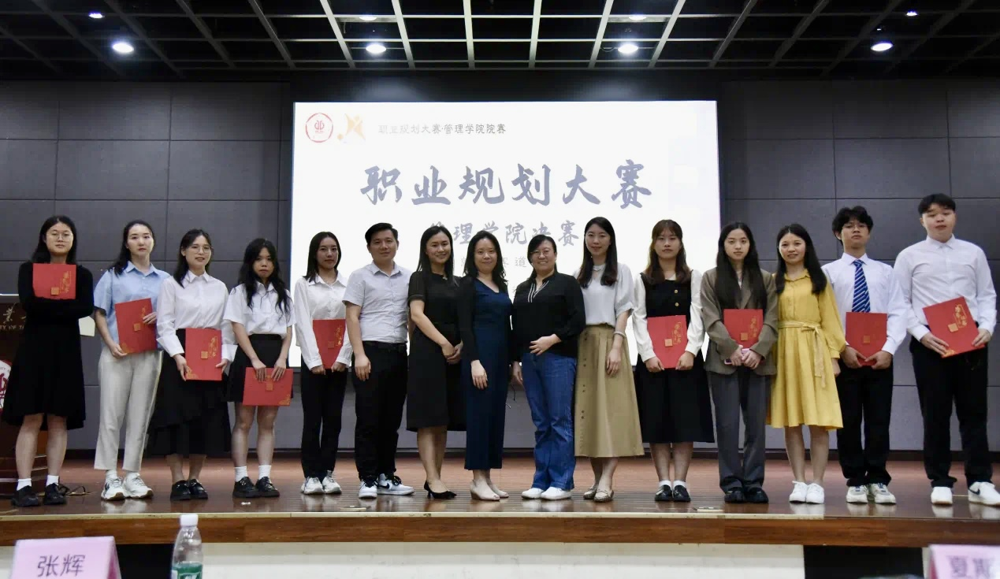
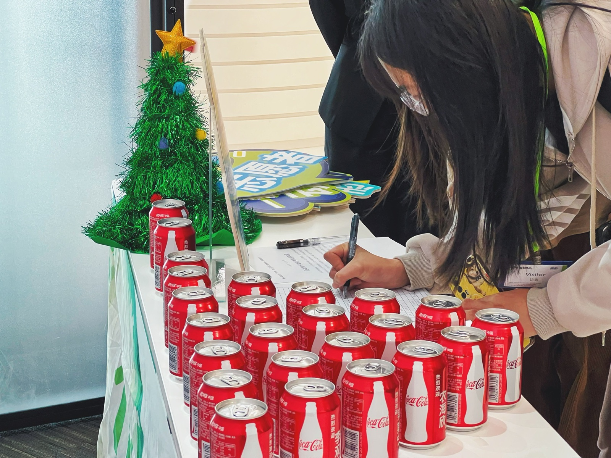
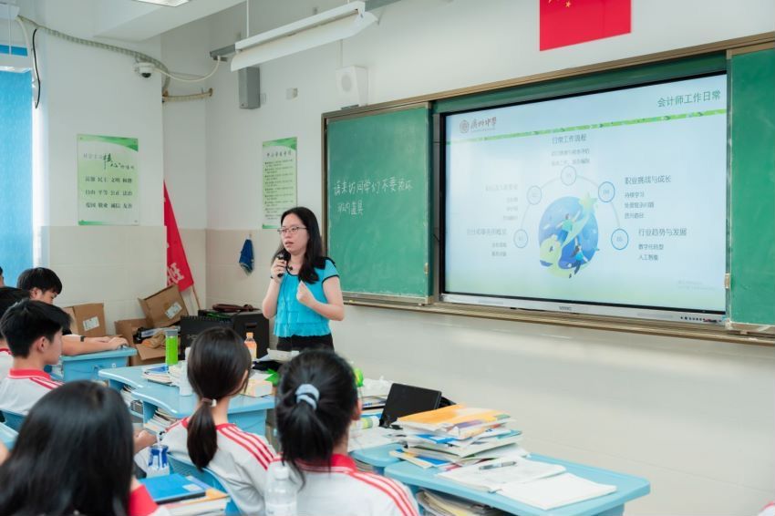

🎯 生涯规划活动
消解两代人的成长代沟。青少年有梦想、缺路径，有迷茫、缺引导；成年人有经验、有焦虑，却习惯用固有认知定义孩子的未来。我双向翻译彼此的视角，让梦想落地、让焦虑化解。
心理学适配逻辑：依托青少年自我同一性建立、青年职业探索、成年焦虑与经验固化心理。青少年有梦想、缺路径，有迷茫、缺引导；成年人有经验、有焦虑，却习惯用固有认知定义孩子的未来。两者极易形成代沟：孩子觉得家长不懂新时代，家长觉得孩子不懂现实。我作为组织者，双向翻译彼此的视角，让梦想落地、让焦虑化解。
活动覆盖高中生、大学生、青年群体，联动各行各业的社会志愿者，搭建跨年龄、跨职业的生涯交流平台。我以双向沟通为核心，把孩子模糊的理想、迷茫的困惑翻译成清晰可行的成长路径，把成年人的现实经验、善意担忧翻译成孩子愿意接纳的成长建议，让两代人在职业与成长话题上彼此理解、同频成长。

广州中学首届生涯节活动，面向全体高中生开展生涯启蒙。高中阶段是孩子探索自我、建立目标、思考未来的关键期，很多学生对专业、职业、未来方向一片迷茫；而多数家长对新时代职业赛道认知滞后，容易盲目规划、过度焦虑。
我作为志愿者之一，为学生分享、答疑，让学生跳出书本局限，看见真实的职业世界。参与的学生收获了视野与方向，打破了"读书无用、未来迷茫"的消极心态。

本次活动面向华附高二学霸群体开展，这群学生思维成熟、认知深刻、独立思考能力极强，对生涯规划有自己独到的见解，常规浅层分享很难满足他们的需求。我结合学生的认知特点，以储蓄规划为生活化切入点，类比延伸至时间规划、目标规划，为学生传递「结果导向、反向拆解」的高效成长思维。
整场分享互动氛围极佳，学生们独到的思考、清晰的逻辑、深刻的认知，也让在场所有成年志愿者深受启发。大家意识到，当代青少年并不幼稚、不盲从，只是缺少适配他们的科学引导。这场双向交流，让学生收获了科学的规划方法，也让成年人看见新时代青少年的优秀与通透。

本次我面向高校大学生开展职业规划专项指导。很多大学生拥有专业知识，但缺乏职业认知，对未来就业、赛道选择、自我定位非常模糊，容易跟风参赛、盲目择业。
我结合管理学专业特色与当下就业趋势，把复杂的职场规则、专业发展逻辑、大赛核心要求，翻译成学生可落地、可执行的规划思路。参与的大学生纷纷表示，活动帮自己理清了迷茫，找准了方向，告别了盲目内耗。

本次模拟面试公益活动，聚焦在校大学生通用求职能力搭建，面向广大有就业预备需求的本硕学生开展。多数学生具备扎实的专业功底，但缺乏系统化的求职训练，在简历逻辑、面试表达、职场礼仪等通用模块存在普遍短板。
我集结30余名跨行业资深职场志愿者，以标准化、通用性求职体系为核心，一对一协助学生梳理个人优势、优化简历框架、拆解结构化面试逻辑、打磨临场应答状态。本次活动重点补齐学生「通用求职基本功」，帮助大家建立规范、稳定、专业的职场表达体系，完成求职能力的系统化筑基，适配全行业岗位面试需求。

活动打破传统课堂的刻板模式，采用兴趣选课、自由交流、实时答疑的松弛形式，让学生敢于提问、敢于表达、敢于分享真实想法。
多年持续陪伴中，我见证了一批又一批学生的成长：参与过活动的学生，陆续考上心仪大学、奔赴理想岗位、继续深造求学。对学生而言，生涯活动为他们点亮了方向、提供了路径；对参与的家长与成年志愿者而言，大家亲眼看见青少年的成长潜力，读懂了孩子需要的不是强制规划，而是尊重、引导与机会。

本次模拟面试活动，是在通用求职能力基础上的职业认知与择业定位进阶专场，聚焦应届毕业生的真实校招痛点。很多学生具备基础面试能力，但对行业差异、岗位适配度、职业发展路径认知模糊，容易出现"会面试、不会选岗、盲目投递、职业定位偏差"的问题。
因此本次活动升级为多行业、多岗位全真模拟+择业复盘模式，邀请不同赛道、不同职级的职场志愿者，结合真实校招场景，帮助学生对比不同岗位的适配性、修正择业认知、理清个人职业路径。活动不再局限于"面试技巧"，而是进阶到职业选择与长期发展，帮助学生把扎实的面试能力，落地到适合自己的精准职业赛道。

我组织一中学生走进华南师范大学沉浸式研学，帮助高中生跳出书本局限、拓宽视野、提前感知大学生活。高中阶段的孩子，不再像低龄儿童一样随意畅想未来，而是因认知局限、未知恐惧陷入迷茫，不敢定义未来，容易陷入焦虑与内耗。
研学过程中，学生近距离感受大学校园氛围、专业特色与成长节奏，对未来有了更具体、更真切的期待。随行的家长与成年志愿者也收获了全新的育儿与成长认知：青春期孩子不需要被安排人生，需要被给予探索世界、探索自我的机会。
真正的教育，是启发探索，而非包办规划。
在生涯规划系列活动中，我是青少年与成人世界的生涯翻译官：
• 把「孩子模糊的梦想」翻译成清晰可行的成长路径，消解迷茫
• 把「家长的焦虑说教」翻译成孩子愿意接纳的陪伴建议，化解代沟
• 把「遥远的职业世界」翻译成可探索、可触摸的真实未来，拓宽成长边界